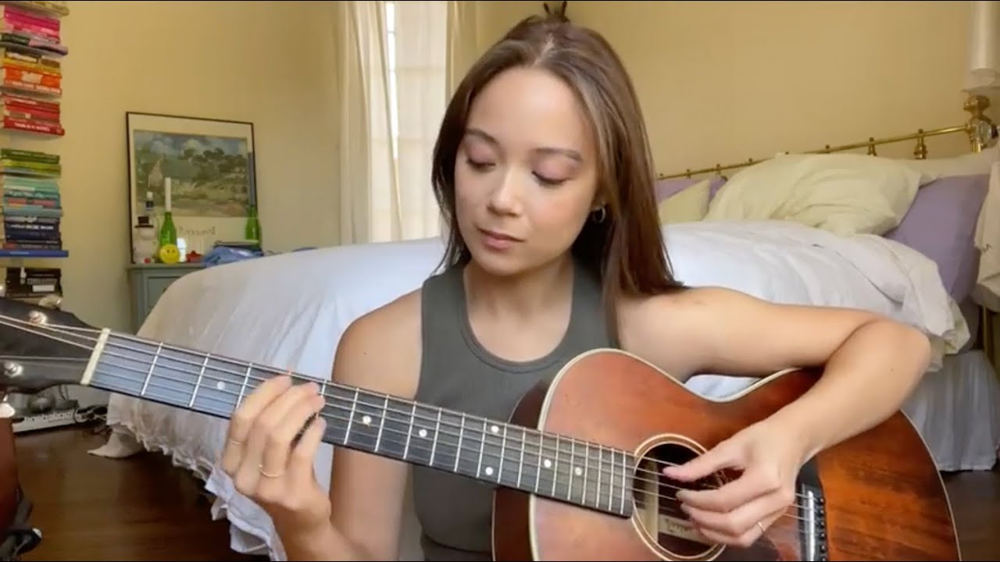

So I'll Start With ILLIT
So This One is Of The Laufey and I like her so much

And The last One, And one of The best's Is the В последний раз It's a Russian song That I Saw on TikTok and I Have been Listening to for Months